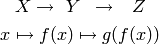

6. Implementación¶
6.1. El patrón Publish/Subscribe¶
Un patrón de diseño (también catalogado como patrón de mensajería) de recurrente aplicación en GPEC ha sido Publish/Subscribe, frencuentemente abreviado Pubsub. Se trata de una arquitectura de paso de mensajes desacoplada (y en algunas implementaciones distribuída) donde existen “remitentes” (o “publicadores”) que envían mensajes ante el acaecimiento de un suceso específico (por ejemplo, un evento originado por el usuario como el click sobre un botón) sin conocimiento alguno sobre “qué sucede despues” con el mensaje. Análogamente existen “receptores” (o “suscriptores”) que en cuya inicialización se define a qué tipo de mensajes se suscribirán (el tipo se define en función del “asunto” o “topic”) y qué acción (un método o función) debe ejecutarse cuando un mensaje de tal tipo arribe.

Diagrama conceptual de la arquitectura Pub/Sub
Como se describe en [vdLaar2002] Pubsub facilita el desacople de componentes (callables, módulos, paquetes) dentro de una aplicación. Los conceptos involucrados son:
- Permitir que partes de un aplicación evien mensajes “al resto de la aplicación”
sin tener que conocer:
- si el mensaje será manejado y usufructuado:
- puede suceder que el mensaje se ignore completamente
- o que sea manejado en muchas partes diferentes de la aplicación
- cómo será manejado el mensaje:
- al publicador no le importa qué se hará con el mensaje y su contenido;
- tampoco hay control del orden en que un mensaje dado se enviará al resto de la aplicación (comportamiento no determinístico).
- si el mensaje será manejado y usufructuado:
- Permitiendo que partes de una aplicación reciban y manejen mensajes desde “el resto de la aplicación” sin tener que conocer quién envió el mensaje.
Un receptor (listerner) es “una parte de la aplicación que quiere recibir mensajes”. Un receptor se suscribe a uno o más tópicos. Un emisor (sender) es cualquier parte de la aplicación que envía (deposita en el intermediario) un mensaje con un tópico dado, y opcionalmente, cualquier información adjunta. Este intermediario (a veces conocido como broker, o directamente pubsub) entrega este mensaje a todos los receptores suscriptos.
6.1.1. Ventajas¶
- Acoplamiento débil: la topología de Pubsub, basada en la intermediación y el desconocimiento de identidades y comportamientos de los objetos que interactuan permite un desacople de los componentes de la aplicación. Esto significa que las distintas “partes” de la aplicación son independientes entre sí, de modo que pueden facilmente desactivarse componentes no críticos sin afectar al conjunto de la aplicación. Esta estrategia es útil para realizar pruebas de seguridad.
- Funcionalidad configurable : Dado que un emisor no tiene necesidad de conocer la existencia de un receptor, es fácil diseñar una arquitectura basada en “plugins” que permite mantener un núcleo y agregar funcionalidades extra con posterioridad (incluso desarrolladas por terceros). Esto trae aparejada la posibilidad de adaptar, mediante extensiones que se activan o no, las características del software en función de las necesidades del usuario.
- Escalabilidad: En las implementaciones distribuidas de demanda moderada (donde los mensajes se transmiten entre múltiples procesos o, incluso, equipos), PubSub provee una arquitectura mucho más simple y autogestionada que la típica topología cliente/servidor para tareas de procesamiento paralelo o Sin embargo, la eficiencia no suele ser proporcional en sistemas de alta demanda computacional.
6.1.2. Pubsub en Python¶
En GPEC se ha utilizado el paquete Python Pubsub de Oliver Schoenborn, en su versión 1 [1] . Esta implementación es muy sencilla y se basa en la existencia de un objeto único (Ver singleton), pub, que controla el envío y las suscripción a los mensajes. Se describe en el siguiente código:
from pubsub import pub
# declaración de la función "destino"
def destino(arg1, arg2=None):
print 'Mensaje con argumentos arg1="%s"\n arg2="%s"' % (arg1, arg2)
# declaración de suscripción
pub.subscribe(destino, 'asuntoParticular')
# función que envía un mensaje
def hacer_algo_y_avisar():
print 'Se enviará un mensaje'
pub.sendMessage('asuntoParticular', arg1=123, arg2=dict(a='abc', b='def'))
if __name__ == '__main__':
hacer_algo_y_avisar()
Cuyo diagrama de secuencia es el siguiente:
6.1.3. Usos en GPEC¶
6.1.3.1. Panel de mensajes¶
Como se ha dicho, PubSub constituye el patrón principal y toda la orientación a eventos se basa en una comunicación vía esta biblioteca.
El ejemplo canónico es el panel de log (registro de mensajes de usuario), donde se registra una crónica de eventos de interés para el usuario, denotados en su categoría con un símbolo y la hora del suceso.

A través de PubSub, cualquier parte del programa envía avisos que el panel (un receptor) mostrará al usuario.
En la incialización del panel se realiza la subscripción a los mensajes con tópico 'log', y asigna como acción el método OnAppendLog():
class LogMessagesPanel(wx.Panel):
def __init__(self, parent, id):
wx.Panel.__init__(self, parent, id)
self.list = wx.ListCtrl(self, -1, style= wx.LC_REPORT|wx.SUNKEN_BORDER)
self.setupList()
sizer = wx.BoxSizer()
sizer.Add(self.list, 1, wx.EXPAND)
self.SetSizerAndFit(sizer)
pub.subscribe(self.OnAppendLog, 'log')
Ante la recepción de un mensaje se produce la invocación del método adjuntando como parámetro un objeto mensaje (msg) en cuyo atributo data se almacena la información enviada por el remitente:
def OnAppendLog(self, msg):
ico = self.icon_map[msg.data[0]]
message = msg.data[1]
index = self.list.InsertImageStringItem(sys.maxint, message, ico)
self.list.SetStringItem(index, 1, time.strftime('%H:%M:%S'))
self.list.EnsureVisible(index) #keep scroll at bottom
if msg.data[0] == 'error':
wx.Bell()
La información en msg.data es, por convención de diseño, una tupla de la forma (asunto, mensaje de usuario). Los asuntos posibles están asociados al icono que los representan:
Asunto Símbolo Descripción ok Acción existosa info Información importante warning Advertencia error Error


Como se observa en el código, en caso de un mensaje del tipo “error”, además de agregar el mensaje se ejecuta wx.Bell() que produce una alerta sonora.
El remitente de mensajes de log se realiza desde múltiples puntos. Por ejemplo ante la carga de la aplicación, cuando se define un sistema, cuando se realiza un cálculo (mediante la invocación a un ejecutable del backend), etc. Por ejemplo, en el código de ejecución de la aplicación, en aui.py se observa:
(...)
main_frame.Show()
pub.sendMessage('log', ('ok', 'GPEC is ready. Define a system to begin') )
app.MainLoop()
6.1.3.2. Generación de gráficos¶
Otro uso de PubSub es la generación de gráficos. Se resume en el siguiente diagrama de secuencia:

Secuencia para la generación de un diagrama desde el evento generado por el usuario
Esto significa que el panel de definición de casos está independizado del panel contenedor de los gráficos generados a traves de PubSub. El mencanismo invocación del backend (desde donde se obtienen los datos a graficar) se verá más adelante.
6.1.3.2.1. Exposición de archivos de datos¶
Cada invocación a un ejecutable del backend dependen de una entrada y produce una salida [2] en un archivo de texto. Para usuarios avanzados que conocen la estructura y significado de estos archivos (descriptos en :ref:’api’), es deseable que tengan un acceso al contenido desde la propia aplicación, para encontrar información numérica puntual cuya precisión se pierde en un gráfico.

Esta tarea se hace a través de PubSub. El emisor envía un mensaje con tópico add_txt adjuntando como información una tupla con la ruta al archivo y el caso al que este cálculo pertenence.
Por ejemplo, la función que escribe el archivo de entrada para el cálculo de parámetros es la siguiente:
def write_conparin(self, direction, model_id, data):
"""Write the input file CONPARIN.DAT ". data could be EOS variables or
model paramater"""
filename = 'CONPARIN.DAT'
filepath = os.path.join(self.path_temp, filename)
template = "{0} {1}\n {2}"
if direction == 0 and model_id in (1,2,3):
data = data[:-2] + [data[-1], data[-2]]
elif direction == 0 and model_id in (4,6):
data = data[:-2] + [data[-1]]
output = template.format (direction, model_id, " ".join( data ))
with open(filepath , 'w') as fh:
fh.write(output)
fh.close()
self.written.add((filename)) #conparin written
pub.sendMessage('add_txt', (filepath, self.case_id))
El atributo path_temp está definido en el constructor de la clase API y se trata de una ruta a un subdirectorio en la carpeta temporal, abstraída del sistema operativo subyacente mediante el módulo tempfile
El receptor de este mensaje es IOPanel que maneja el mensaje con el método OnAddItem() .
def OnAddItem(self, msg):
filepath, case_id = msg.data
head,filename = os.path.split(filepath)
if case_id not in self.cases.keys():
#if case is unknown, create it
node = self.tree.AppendItem(self.root, "Case %d" % case_id)
self.cases[case_id] = node
else:
node = self.cases[case_id]
with open( filepath, 'r') as fh:
content = fh.read()
item = self.tree.AppendItem(node, filename)
self.tree.SetPyData(item, content)
#self.tree.Expand(node)
self.tree.SelectItem(item) #TODO refresh text_ctrl?
6.1.3.2.2. Tabla de incidencias de mensajes¶
Tópico Descripción Emisor/es Receptor/es log Mensaje al usuario varios LogMessagesPanel add_txt Expone archivo de backend ApiManager.* IOPanel clone case Crear un nuevo caso a partir del actual CasePanel.Clone TabbedCases make.* Invoca el cálculo y genera el gráfico CasePanel.OnMakePlots SuitePlotsPanel refresh all Refresca la interfaz de usuario varios MainFrame active page Trae a primer plano una pestaña de los gráficos PlotsTreePanel SuitePlotsPanel
Para un listado completo puede analizar el código fuente ejecutando grep -r "pub.sendMessage" sobre el directorio de código fuente raiz de GPEC. [3]
6.2. Invocación de ejecutables del backend¶
La comunicación frontend-backend se describe en el siguiente diagrama de secuencia donde se resalta el ciclo de vida del objeto ApiManager donde está implementada la lógica de tratamimiento de la interfaz de comunicación.
El caso particular representado es la obtención de datos el cálculo del diagrama de fase global (que se obtiene mediante el ejecutable GPEC.exe) satisfaciendo las precondiciones de ejecución (por ejemplo, que exista el archivo de entrada GPECIN.DAT, que exista permiso de ejecución, que exista permiso de escritura en la carpeta destino). En caso de error por algún motivo (conocido o no), se remite un mensaje de log y se cancela la ejecución.

Secuencia de la comunicación frontend-backend
6.2.1. La dependencia con Wine¶
El backend de GPEC, codificado en Fortran por Cismondi, ha sido compilado mediante Microsoft Fortran y se compone de un conjunto de ejecutables Windows (.exe). Si bien el código es Fortran estándar y compatible con compiladores libres (como GNU Fortran ) pudiéndose generar ejecutables específicos para sistemas Linux, existe una dependencia con la librería propietaria IMSL® Numerical Libraries, que brinda un conjunto de rutinas matemáticas (álgebra lineal, cálculo matricial, etc.) que se utilizan en la implementación de los algoritmos.
Esta dependencia impide, por el momento, generar una versión completamente nativa para plataformas Linux (y, a priori, la posibilidad de liberar completamente el código).
Para permitir la ejecución sobre Windows es necesario la utilización de Wine, un software que ofrece una capa de compatibilidad para aplicaciones DOS, Windows 3.x, y win32, proveyendo una implementación alternativa (y parcial) del núcleo NT.
A través de Wine, los ejecutables Fortran de GPEC funcionan perfectamente. La función que invoca estos ejecutables verifica el sistema operativo en que se está corriendo la aplicación y en caso de no ser Windows, invoca a Wine:
args = []
if sys.platform != 'win32':
#On any non-Windows system, we run binaries through wine
args.append('wine')
args.append( os.path.join(PATH_BIN, bin + '.exe'))
Nota
Esta dependencia es salvable utilizando la versión para Linux de la biblioteca IMSL pero que únicamente es compilable mediante Intel® Fortran Composer , con lo cual se duplica la dependencia de software privativo.
6.3. Memorización de resultados costosos¶
Como se observa Secuencia de la comunicación frontend-backend, el proceso de comunicación y obtención de los datos desde el backend no es trivial. Más aún, considerando que, dada la arquitectura heredada interviene de manera insalvable la escritura y lectura a disco, el proceso también es costoso [4] a nivel computacional.
Tomando de ventaja de la condición determinística de la operación (para los mismos parámetros de entrada, es decir el caso, se obtiene siempre el mismo resultado) se puede calcular una vez, guardar el resultado en memoria, y devolverlo sin recalcular cada vez que la operación con exáctamente los mismos parámetros es solicitada de nuevo. A este proceso se lo denomina caché de datos.
Esto tiene validez, además, dado que la probabilidad de que los parámetros sean los mismos es alta. Por ejemplo, en el siguiente caso de uso:
El usuario necesita generar una isopleta para determinada composición (o cualquier otra curva no global). Para esto, GPEC requiere haber calculado el diagrama global previamente (los ejecutables requieren GPECOUT.DAT como precondición de entrada), de modo que este cálculo se realiza sin mostrar los diagramas. Si posteriormente el usuario decide que necesita los diagramas globales, simplemente se grafican el respaldo en memoria sin realizar la el cálculo mediante backend.
Por último, dado el manejo referencial de memoria que hace Python, la permanencia del array en memoria no está duplicada respecto al que se utiliza para graficar.
6.3.1. Patrón decorator¶
Una forma habitual de implementar el mecanismo de caché es a través del patrón Decorator, que en términos simplificados realiza una transformación dinámica de una función o método, agregándole una funcionalidad que no tiene por sí misma, o más en general, alterando de alguna manera el resultado devuelto.

Diagrama de clases del patrón Decorator
Expresándolo en términos matemáticos, se trata de una composición de funciones:

Desde la versión 2.4, Python tiene una nomenclatura facilitada para la escritura de decoradores. Una estructura genérica para la definición de una función decoradora, que se compone de un wrapper de dos funciones anidadas [5], es la siguiente:
>>> def mydecorator(function):
... def _mydecorator(*args, **kw):
... # hacer las tareas de 'decoración'
... # antes de llamar a la funcion decorada
... res = function(*args, **kw)
... # hacer otras cosas antes de devolver el resultado
... return res
... # se devuelve la subfunción
... return _mydecorator
...
>>>
Cuando se tiene una funcion cualquier que se quiere decorar, simplemente se utiliza la sintaxis @mydecorator justo antes de la función en cuestion. Por ejemplo:
>>> @mydecorator
>>> def mifuncion():
... pass
>>>
Al llamar a mifuncion() se obtiene en realidad mydecorator(mifuncion()). La ventaja sintáctica de Python es que permite
6.3.2. Algoritmo de caché de datos¶
El algoritmo utilizado para la implementación del sistema de caché se llama memoize [6] y es descripto en detalle en [ZIADE2008] , cuya versión, parcialmente simplificada, se ha utilizado.
En este caso, la funcionalidad que aporta el decorador a la función que se “decora” es la siguiente:
- Se obtienen todos los parámetros de la función y con ellos se genera un hash, es decir, una clave de cadena de caracteres unívoca para ese conjunto de datos.
- Se evalua si ese hash existe como clave en el diccionario que almacena resultados “memorizados”.
- Dependiendo del resultado anterior
- Si la clave existe en el diccionario (o sea, el resultado para esos parámetros se calculó previamente) se devuelve el valor de la entrada sin llamar a la función decorada.
- Si la clave no existe (lo que implica que es la primera vez que se llama la función con los parámetros dados) se invoca a la función decorada y con el resultado se agrega una entrada en el diccionario hash:resultado. Además, se devuelve el resultado.
6.3.3. Código fuente¶
def compute_key(function, args, kw):
key = pickle.dumps((function.func_name, args, kw))
return hashlib.sha1(key).hexdigest()
def memoize():
def _memoize(function):
def __memoize(*args, **kw):
key = compute_key(function, args, kw)
if key not in cache.keys(): #we have'nt it already?
result = function(*args, **kw)
cache[key] = result #store a new one
else:
print 'found in cache' #TODO may be it's a better idea get a file and parse it again instead
#cache the whole arrays.
return cache[key]
return __memoize
return _memoize
6.4. Algoritmo de análisis sintáctico¶
Como ya se ha hecho mención, la comunicación con los ejecutables del backend se realiza mediante archivos de texto. Los archivos de salida, en particular, contienen (en arreglos de columnas) los vectores de datos para cada variable de una curva.
La tarea de delimitar la información de un texto se denomina en la lingüistica Análisis sintáctico y es también un área de la informática de utilidad en la implementación de diversos software (como ejemplo notorio, los compiladores).
Este trabajo implementa un analizador sintáctico (denominado parser, en ingles) para extraer los vectores numéricos (ordenados como un arreglo bidimensionales) de los archivos de salida, obteniendo así la información necesaria para graficar cada curva.
Nota
Para una comprensión cabal del algoritmo, es necesario estár familiarizado con la definición de la interfaz. Una descripción exhaustiva se expone en Especificación de la interfaz de comunicación.
6.4.1. Descripción¶
El algoritmo se basa en identificar tokens (marcas) que declaran el inicio y final de información válida para un diagrama, determinando así la porción de texto (números flotantes en formato texto) que debe extraerse. Este texto se convierte a un objeto array de numpy.
Las marcas de inicio son cadena de tres letras mayúsculas (VAP,``CRI``,``LLV``, etc.) y un renglón vacío marca el final del bloque de información.

Topología de la información extractada
Una estructura de datos basadas en asociaciones clave-valor (diccionarios), define los tipos posibles de curvas y las columnas significativas que se deben extraer para cada una. Iterando sobre todas las líneas del archivo se obtiene un nuevo diccionario cuya clave es una tupla de la forma (inicio, fin) y el tipo de curva como valor.
Con esta información simplemente se “recorta” el archivo de texto completo del cual se realiza una copia residente en memoria [7] para importarlo y convertirlo a arreglos de números flotantes de doble precisión mediante la función numpy.loadtxt() que acepta como parámetro opcional la cantidad de columnas significativas que deben interpretarse [8].
6.4.2. Código fuente¶
def output2array(self, filepath, curve_types):
"""Parses gpecout.dat, PXYOUT.DAT TXYOUT.DAT or ISOPOUT.DAT
Detects numeric blocks and create arrays with them"""
tokens = {} #{(begin,end):'type', ...}
begin = 0
end = 0
with open(filepath, 'r') as fh:
number_of_lines = len(fh.readlines())
fh.seek(0)
#give skip from header and skip from footer
for line_number, line in enumerate(fh):
if begin <= end:
#looking for a curve TOKEN : 'VAP', 'CRI' etc...
if line.strip() in curve_types:
begin = line_number + 1
curve_type = line.strip()
elif not line.strip() or line_number==number_of_lines-1:
#looking for a blank line which determines the end of
#arrays block.
end = line_number
tokens[(begin, end)] = curve_type
arrays_out = {} #Format: {type: [array1,array2, ...], ...}
for (begin, end), curve_type in sorted(tokens.items()):
fh.seek(0)
temp_w = cStringIO.StringIO() #a memory file to write
#write lines just of the block between (begin,end)
for l,line in enumerate(fh):
if begin <= l < end and \
len(get_numbers(line))>0:
#a way to check the special case of col
#headers after mark
temp_w.write( line.replace('*', '') )
#a copy to read
temp_r = cStringIO.StringIO(temp_w.getvalue())
#retrieve significative columns from a dictionary.
#(begin,end)=>type=>num_cols
signif_cols= range(curve_types[tokens[(begin, end)]])
curve_array = np.loadtxt(temp_r, usecols=signif_cols)
temp_w.close()
temp_r.close()
#if it's a new type on the dict, create it.
if curve_type not in arrays_out.keys():
#TODO should it be a ndarray ?
arrays_out[curve_type] = []
arrays_out[curve_type].append(curve_array)
fh.close()
return arrays_out
6.5. Interfaz Gráfica de Usuario (GUI)¶
6.5.1. Contenedores y sizers¶
En la introducción general a WxPython vista en Marco Teórico se hizo referencia a la clase wx.Panel describiéndola como “un contenedor de otros objetos gráficos”.
Tradicionalmente, uno de los problemas más complicados en la programación de GUI es el manejo de la disposición física de los componentes en el espacio disponible (layout). En los comienzos, la solución fue el posicionamiento absoluto donde el programador explicitaba el tamaño y la posición exácta del widget en la pantalla [9] . Esta estrategia acarrea una batería de problemas ya que sólo funciona correctamente si se tiene control total sobre el espacio disponible, es decir, controlando la resolución de pantalla del equipo del cliente, el tamaño de tipografía estándar que ha elegido, etc. pero se vuelve inmanejable cuando el layout es dinámico, es decir, que cambia en función de alguna acción del usuario.
Para solucionar este problema wxPython, y en general, todos los frameworks para la construcción de GUIs modernas, utilizan el concepto de sizers, que son algoritmos automáticos que distribuyen los elementos de la interfaz de una menera predeterminada.
Un sizer en wxPython es un objeto invisible que no es un contenedor (como son, por ejemplo, Panel, Frame o una página de un elemento wx.Notebook) sino que simplemente indican cómo se ubican originalmente y cómo se comportan visualmente los elementos ante un evento que afecte la apariencia de la aplicación. Todo los sizers son instancias de una subclase de la clase abstracta wx.Sizer
Ver también
- Para una explicación exhaustiva sobre el tema, vea el capitulo 11 de
- “wxPython in Action”, [NR-RD2006]
Por ejemplo, sizer permite dividir el espacio, cualquier este sea, en porciones proporcionales de filas o columnas, y ubicar allí elementos (como botones o campos de texto), definiendo atributos como su alineación horizontal o vertical, el tamaño (proporcional al espacio, fijo, con límite máximo, etc). Asímismo, un sizer puede contener a otros de manera anidada, definiendo una cuadrícula con espacios para ubicar los widgets controladores [10].

Diseño con sizers de una ventana de la aplicación mediante la utilidad wxGlade
El hecho de que un sizer no sea un contenedor indica que parent de cualquier elemento aún debe serlo. Es decir, un elemento cualquier (por ejemplo, un botón) está en incrustado en un contenedor (por ejemplo, un panel) pero ubicado según indica un sizer que está haciado al mismo contenedor.
6.5.1.1. Uso en la aplicación¶
En GPEC, toda la distribución de componentes está dispuesta a través de sizers. Como ejemplo, se muestra la parte superior de un panel para la definición de un caso donde consta el uso anidado de sizers de distinto tipo.
Distribución mediante sizers de componentes. El contenido del GridBagSizer es dinámico, cambiando su contenido en función de un evento de cambio de opción (evento wx.EVT_CHOICE) del menú de modelos.
Se observa que existe un panel contenedor principal, CasePanel cuyo sizer principal es por filas (wx.BoxSizer(wx.VERTICAL)) al que se le suman 2 instancias del panel , VarsAndParamsPanel (sólo se muestra uno, pero corresponde 1 para cada compuesto del sistema binario) cuyo layout se basa en un wx.GridBagSizer de 6 filas por 5 columnas.
La porción de código relevante se describe a continuación:
class CasePanel(scrolled.ScrolledPanel):
def __init__(self, parent, id):
scrolled.ScrolledPanel.__init__(self, parent, id,
style = wx.TAB_TRAVERSAL
| wx.CLIP_CHILDREN
| wx.FULL_REPAINT_ON_RESIZE)
self.box = wx.BoxSizer(wx.VERTICAL) # <- sizer principal
self.model_choice = wx.Choice(self, -1,
choices = sorted(self.model_options.keys()))
first_row_sizer = wx.BoxSizer(wx.HORIZONTAL) # <- sizer secundario
self.load_button = wx.lib.buttons.GenBitmapTextButton(self, -1,
wx.Bitmap(os.path.join(PATH_ICONS,"compose.png")),
"Define system")
first_row_sizer.Add(self.load_button, 0,
flag=wx.ALL | wx.ALIGN_LEFT | wx.EXPAND , border=5)
first_row_sizer.Add((10, 20), 0, wx.EXPAND)
first_row_sizer.Add(wx.StaticText(self, -1, "Model:"))
first_row_sizer.Add(self.model_choice) # <- menu
self.box.Add( first_row_sizer, 0, flag= wx.TOP
| wx.LEFT
| wx.FIXED_MINSIZE
| wx.ALIGN_LEFT, border = 5)
self.panels = (VarsAndParamPanel(self,-1),
VarsAndParamPanel(self,-1))
self.box.Add(self.panels[0], 0, wx.EXPAND ) # <-- subpanel 1
self.box.Add(self.panels[1], 0, wx.EXPAND )
class VarsAndParamPanel(wx.Panel):
"""a panel with 2 columns of inputs. First colums input EOS variables.
The second one are the inputs to model parameters (change depending
the model selected).
This parameter are related and is possible to calcule a group of values
defining the other one.
"""
def __init__(self, parent, id, model_id=1, setup_data=None):
"""setup_data: (id, name, tc, pc, vc, om)"""
wx.Panel.__init__(self, parent, id, style = wx.TAB_TRAVERSAL
| wx.CLIP_CHILDREN
| wx.FULL_REPAINT_ON_RESIZE
)
gbs = self.gbs = ui.widgets.GridBagSizerEnh(6, 5)
6.5.2. El uso de la Advanced User Interface¶
La ventana principal de la aplicación MainFrame definida en aui.py es una de subclase de la clase wx.Frame pero el manejo de la distribución de sus componentes se basa en una librería especial denominado Advanced User Interface, que reside en wx.aui.
Esta librería está construída sobre la pila de componentes de wxPython y permite implementar “interfaces avanzadas” a través del control de “subventanas” automatizado de eventos como maximizar (ocupar toda la ventana principal), cerrar (no se muestra en la ventana principal) o restaurar (vuelve a la posición original) entre otras.
Comparando con los resultados que se obtienen, utilizar wx.aui tiende a ser trivial. Básicamente consiste en dos objetos:
- Un manejador, wx.aui.AuiManager, que se encarga de toda la lógica de control, mantener el estado de las ventanas y lanzar los métodos automáticos cuando ocurren eventos sobre la interfaz.
- Al menos una instancia wx.aui.AuiPaneInfo que define una “subventana” a la que se le asocia el contenido a mostrar, en general, un panel principal de wx.

La interfaz avanzada de GPEC visualizando 2 de los 4 paneles por defecto.
Vale comentar que luego de cualquier cambio, yendo a :menuselection:‘View –> Restore default view‘ se reestablece la estructura original.
Un extracto relevante de MainFrame es el siguiente:
class MainFrame(wx.Frame):
def __init__(self, parent, id=-1,
pos=wx.DefaultPosition, title='GPEC', size=(800,600),
style=wx.DEFAULT_FRAME_STYLE | wx.MAXIMIZE ):
wx.Frame.__init__(self, parent, id, title, pos, size, style=style)
self._mgr = wx.aui.AuiManager(self) #<- manejador
self.cases_panel = TabbedCases(self, -1)
self.cases_auipane = wx.aui.AuiPaneInfo().Name("cases").\
Caption(u"Cases").Left().MinSize(the_size).MaxSize(the_size).\
Layer(1).Position(2).CloseButton(True).MinimizeButton(True)
self._mgr.AddPane(self.cases_panel, self.cases_auipane )
self._mgr.Update()
self.Maximize()
En el código se observa la siguiente secuencia
- Se instancia el manejador de wx.aui
- Se instancia el panel de contenido, en este caso TabbedCases
- Se instancia la subventana wx.aui.AuiPaneInfo con todas sus propiedades (ubicación, título, tamaño mínimo, etc. )
- Se define que el contenido de la subventana será el panel antes generado y se lo agrega al manejador.
- Se actuliza el layout
Una observación en el paso 3 es que para definir los atributos del panel se utiliza una técnica denominada encadenado de métodos (Method chaining) [11] donde la ejecución de un método de un objeto devuelve el objeto en sí, posibilitando “encadenar” la ejución de otro método.
La interfaz por defecto de GPEC se compone de 4 instancias de AuiPaneInfo cuyo contenido se lista en la siguiente tabla:
Título Panel de contenido Descripción del contenido Cases TabbedCases Definición de casos Plots SuitePlotsPanel Pestañas de gráficos Manager PlotsTreePanel Árbol de manejo gráficos Info InfoPanel Panel de informaciones diversas
6.5.3. La gestión avanzada de pestañas¶
En el área de las interfaces gráficas de usuario, la navegación por pestañas (tabbed document interface) se refiere a la posibilidad de que varios paneles con información estén contenidos dentro de una sola ventana o panel principal, usando pestañas para alternar entre ellos. Es típico su uso en los navegadores web modernos, como Mozilla Firefox. GPEC hace uso extendido de esta arquitectura, en el soporte de múltiples casos, múltiples gráficos, o varios paneles de información.
En wxPython existen múltiples implementaciones de controladores de pestañas y se ha hecho uso de AuiNotebook, que forma parte de las Advanced Generic Widgets (AGW) desarrolladas por el programador italiano Andrea Gavana.
Toda la librería AGW forma parte del paquete estándar de wx y reside en wx.lib.agw.aui.
La gran ventaja de AuiNotebook es que funciona como complemento de la intefaz avanzada de Python wx.aui permitiendo el control de eventos como drag & drop de pestañas entre distintos paneles, o la visualización simultánea de múltiples pestañas.

El control AuiNotebook de los gráficos mostrando 2 diagramas en simultáneo
6.5.4. Justificación de diseño¶
6.5.5. Pruebas de usabilidad¶
6.6. Integración Matplotlib-WxPython¶
| [1] | En 2010 el autor de Python PySub reescribió completamente la API, agrengando una orientación a objetos del paso de mensajes más poderosa, a la que llamó version 3. |
| [2] | En realidad, la llamada está intercedida por una función decoradora (memoize) que realiza un caché de los resultados la primera vez que se invoca. Si en sucesivas llamadas los parámetros coinciden, se devuelven los datos almacenados en memoria, tarea mucho más rápida que recalcular. |
| [3] | El comando grep -r busca de manera recursiva una cadena (o una expresión regular) sobre sobre los archivos de un directorio |
| [4] | El módulo cStringIO provee un tipo de buffers de cadenas de caractéres con la misma interfaz que un archivo de texto normal. Las operaciones con la información en memoria son altamente eficientes. |
| [5] | “Mientras que las velocidades de CPU y las capacidades de memporia se han incrementado enormemente, otros aspectos concernientes a la performance como las velocidades de acceso a disco se han quedado en el tiempo. Como consecuencia, estas latencias son cada vez más seguido un cuello de botella en la performance global del sistema”. http://en.wikipedia.org/wiki/Moore’s_law#Importance_of_non-CPU_bottlenecks |
| [6] | También llamado memoization. Ver http://en.wikipedia.org/wiki/Memoization |
| [7] | Cuando se necesita pasar parámetros específicos al decorador (además de los que se pasan en la llamada a la función decorada) se necesita una forma sutilmente más compleja, donde la declaración del decorador tiene un subnivel más de wrappering, o sea, 3 funciones anidadas. |
| [8] | Una referencia completa de esta función se encuentra en http://docs.scipy.org/doc/numpy/reference/generated/numpy.loadtxt.html |
| [9] | Una aproximación de este tipo, relativa al tamaño de la ventana, utiliza la versión anterior de GPEC. |
| [10] | Para layout de estilo cuadrícula se utiliza una de las implementaciones de la clase abstracta wx.Sizer es GridSizer |
| [11] | Esta técnica es ampliamente utilizada en frameworks Javascript como jQuery <http://jquery.com>, dada que su alta expresividad produce código más compacto, característica muy relevante en el ambiente web. Ver http://en.wikipedia.org/wiki/Method_chaining |
| [vdLaar2002] | van de Laar, F. (2002). Publish/Subscribe as architectural style for component interaction (Mater’s thesis), Phillips Research Laboratories, Eindhoven |